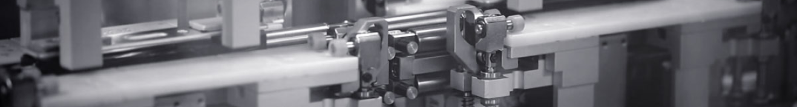
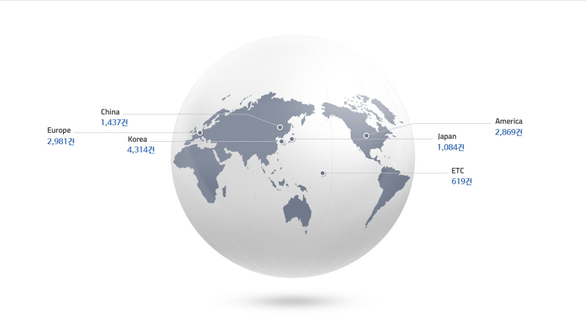

r&d
연구개발투자
삼성SDI는 지속적인 연구개발
투자를 통해 기업경쟁력을
강화하고 있습니다.
2017년 연구개발 투자비용은 525,959백만원이며, 이는 매출액 대비 8.32% 수준입니다.
연구개발조직
삼성 SDI는 변화와 최선을 통해
새로운 미래를 창조합니다.
삼성SDI는 연구개발 조직은 SDI 연구소, 소형전지사업부, 중대형전지사업부, 전자재료사업부 내에서 운영되고 있으며, 각 부분 간 협업을 통해 글로벌 기술 리더십을 강화하고 있습니다. 이차 전지 소재 연구개발 강화와 칠레 광산 등에서 원료수급,안정화 노력을 기울이고 있습니다.
연구개발전문인력
삼성SDI는 급변하는
기술 및 시장
환경을 적극 선도하기 위해
연구개발 파트너십을
강화하고 있습니다.
삼성SDI는 2017년말 약 2,215명의 연구개발 인력을 보유하고 있으며 전사비중은 24.2%, 석박사 비율은 50.4% 입니다. 학습조직 운영 활동을 전개하고 있으며, 글로벌 인재양성 풍토 확대를 위해 현재 학술연수, 사내 기술대학 운영, 현지 완결형 글로벌 인재 양성센터 운영, 글로벌 교육포탈 사이트 운영, 우수 컨텐츠 전파 등 각종 제도를 확대 지원하고 있습니다.
사업별 r&d
SDI 연구소
중장기 추진전략 수립
삼성SDI는 제품 리더십을 확보하기 위해 중장기 추진전략을 수립하여 운영하고 있습니다. 중장기 연구 개발 진략을 바탕으로 빅데이터 기반의 과학의 기술-인사 관리시스템을 구축하여‘생동하는 강한 연구개발’을 구현할 계획입니다.
특허
지적재산권 시너지 창출
삼성SDI는 전지 소재 분야 뿐만 아니라 차세대 에너지 소재 분야에서 특허 시너지를 창출할 수 있는 기반을 구축하였습니다. 특히, 차세대 전지 및 소재분야의 주요 과제에 대해 과제 밀착 특허 지원으로 경쟁력 있는 특허를 발굴하며 차세대 사업분야를 개척해 나가고 있습니다. 삼성SDI는 2017년말 기준 국내외 13,304건의 등록 특허를 유지하고 있습니다. 특히 미국, 유럽, 중국등 주요 시장에서 7,287건의 등록 특허를 확보하며 글로벌 시장에서 대응력을 강화하고 있습니다